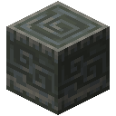
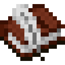

Milestones
Every milestone is an advancement, in the frame the advancement screen gives it, and the frame lights up once you have made it. They run roughly in the order a world unfolds, though most chapters can be taken in any order.
A first model
 Checkpoint
Checkpoint
Save a trained model. Cable an Embedding Table to a Model Core, train it on
the Field Dataset and save it: Getting Started.
Harvest Time
Save a model that passes the Reacting test. Saving tests a model on every benchmark; a first model passes this one once
it has practised long enough.
 Agent
Agent
Make an agent. Craft one, place it beside some farmland and give it your checkpoint:
Agents.
Hello, World
Give an agent a program of your own. Type one in its screen, or click it together from the palette.
The old world

Find a ruin of the people who were here before. Archive houses, relay masts and buried vaults stand far apart:
Ruins.
 Lost Words
Lost Words
Dig an archive shard out of a ruin. Each is a piece of one record, with some of its text lost:
The Archive.
 The Archive
The Archive
Make an archive drive to file shards into. Shards of the same record filed together make one better copy.
 Restoration
Restoration
Place a Reader. It restores a record's lost text with a model of yours.
 Words, Not Letters
Words, Not Letters
Learn a vocabulary in a BPE Forge. A vocabulary learned from what you have recovered lets a model read words
instead of letters: Tokens.
It Reads
Save a model that passes the Reading test. Train on an Archive Drive until the test loss is 1.40 or less:
Models and Tests.
Machines from scratch
 The Bench
The Bench
Place a Bench, where modules are wired from primitives. Each spec comes with cases that break the obvious design:
The Bench and the Fabricator.
 Lithography
Lithography
Place a Fabricator, which makes machines from designs. Photomasks found in the ruins work in it too.
 Rows by Columns
Rows by Columns
Verify a design for Matrix Multiply.
The Layer
Verify a design for the Linear Layer. It opens once matrix multiply is verified.
Feed Forward
Verify a design for the Feed-Forward Block. It opens once the linear layer is verified.
On Average
Verify a design for Mean.
In Range
Verify a layer norm that survives flat and far rows. It opens once mean is verified.
A Smooth Bend
Verify a design for GELU.
Overflow
Verify a softmax that survives large scores. Scores of a thousand overflow the obvious design.
Paying Attention
Verify a design for Attention. It opens once softmax is verified.
The Block
Verify a design for the Transformer Block. It opens once attention is verified.
From Scratch
Verify every spec on the Bench.
 Residual
Residual
Lay a residual stream, the backbone every transformer is built around. Transformer layers read from it and add to it:
The Residual Stream.
Models that work
Each benchmark is passed by saving a model that passes it; the table in Models and Tests says what to practise for each.
A Place for Everything
Save a model that passes the Recall test. Practise on the Storage Dataset.
The Way Home
Save a model that passes the Reversal test. Practise on the Errand Dataset.
Once More From the Top
Save a model that passes the Induction test. Practise on the Pattern Dataset; it takes two layers of
attention.
Pigeonholes
Save a model that passes the Sorting test. Practise on the Sorting Dataset.
What Comes Next
Save a model that passes the Forecasting test. Practise on the Growth Dataset.
Plain Words
Save a model that passes the Orders test. Practise on the Orders Dataset; it takes a model too big to
carry.
A Whole Model
Save one model that passes every test. A Model Core practises up to four kinds at once.
Putting models to work
 A Watched Field
A Watched Field
Place a Forecaster by your crops. It writes down how the crops around it grow:
The Forecaster.
 Ahead of Time
Ahead of Time
Have a Forecaster grow your crops with a model it trusts. Train a model on the Forecaster's own log until it trusts it.
 At Your Service
At Your Service
Place a Model Server. A bigger model stays in a server and answers over relays:
Serving Models.
 Within Reach
Within Reach
Place a relay. The plans turn up on relay masts and in vaults.

Have an agent carry out an order its model understood. Start a chat message with its name, such as Pip, bring me some bread. Its model
has to have practised orders.
Salvage
 Salvage
Salvage
Find a salvaged model in a ruin. Each one failed in its own way: Salvaged Models.
Answering
Repair the field model that never answered.
No Peeking
Repair the field model that was never wrong.
First and Last
Repair the errand model that came home the wrong way.
Steady Hands
Repair the storeroom model that burned out.
Shortcuts
Repair the tall model that never learned to read.


 AgentProgram CardChiseled TuffArchive ShardArchive DriveReaderTokenizerBenchFabricatorBlank PhotomaskResidual Stream
AgentProgram CardChiseled TuffArchive ShardArchive DriveReaderTokenizerBenchFabricatorBlank PhotomaskResidual Stream


 ForecasterWheatModel ServerRelayBook and QuillSalvaged Model
ForecasterWheatModel ServerRelayBook and QuillSalvaged Model